ASSIGNMENT 1: EXERCISE 1
Contents
Part A
close all; clear all f = @(x,y) 2.*x + 4.*y + x.^2 - 2.*y.^2; n = 300; x = linspace(-10,10,n+1); y = x; [X,Y] = meshgrid(x,y); alpha = 1; figure [C,h] = contourf(alpha*X, alpha*Y, f(alpha*X,alpha*Y)); clabel(C,h)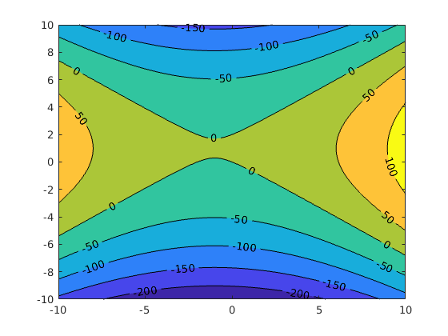
Part B
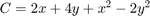
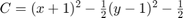
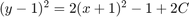
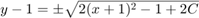
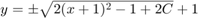
This function describes pretty well the figure shown above. Increasing the constant C (or z-axis) will cause the parabolas created by the square root to increase in distance in seperation in the x direction.
Part C
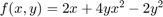
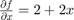
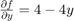
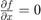
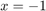
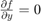
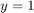
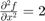
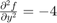
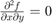
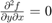
This point (-1,1) is a stationary point but neither a maxima or minima. This point is an inflection point as shown by the hessian.
ASSIGNMENT 1: EXERCISE 2
Part C
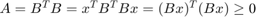
Therefore since this equality holds for all B, A is positive semi-definite
Part D
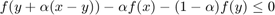
If this holds true, then the f(x) is convex.
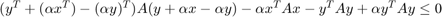
All the terms cancel out. Therefore f(x) is convex.